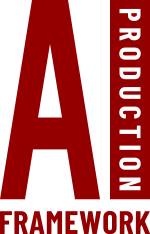
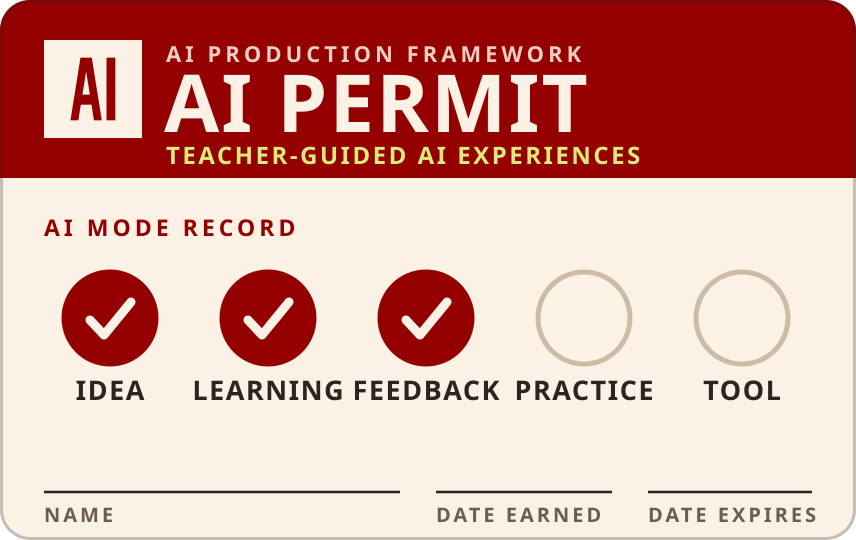

For teachers and school leaders · Grades 7–12
AI Production Framework and Pathway
A shared way for grades 7–12 classrooms to teach students to use AI while keeping the learning at the center.
Start the tourOne idea per screen. Use Next, or the arrow keys.
The big picture
Two halves that fit together
The Framework
What students need to understand and how they should judge. Three connected components that apply every time AI is used in learning.
- AI Literacy
- Core Competencies
- AI Modes
AI Production License Pathway
Like learning to drive, students begin with supervised practice on the AI Permit. The AI Production License records readiness for independent use in the scope assessed. Each teacher-approved assignment sets what help is allowed.

→The goal underneath both
AI should support the work without replacing the thinking students are there to learn.
- Understand the system.
- Direct the help.
- Own the thinking.
Part 1 · The Framework
Three connected components
Together they help students understand AI, use it responsibly and choose help that has a purpose.
- Component 1 · Understand AIAI LiteracyThe foundation
- Component 2 · Use judgmentCore CompetenciesFour, used together every time
- Component 3 · Apply the helpAI ModesFive kinds of purposeful help
Component 1 of 3 · Understand AI
AI Literacy: the foundation
Understand what AI is, how it works at a basic level, key moments in its history and how it's used in the real world.
A foundation for informed use
AI systems can
- predict
- classify
- recommend
- generate
A chatbot is one kind of AI. Ask when its help is useful and what needs checking.
AI Literacy · 1 of 4
How it works
- Language models learn patterns during training.
- Prompts, sources and earlier turns in the chat guide what it generates.
- Correcting a chat does not mean the model was permanently retrained.
AI Literacy · 2 of 4
How it developed
Rule-based systems, then machine learning, neural networks and generative models. Today's chat tools are one part of that history.
- Rules
- Machine learning
- Neural networks
- Generative AIToday's chat tools
AI Literacy · 3 of 4
Where it appears
- Recommendations, spam filters and image recognition.
- Generated text and other everyday tools.
- Ask what goes in, what comes out and how people use it.
- NetflixRecommends what to watch
- SpotifyRecommends music
- YouTubeRecommends videos
- TikTokOrders your feed
- GmailFilters spam
- Google PhotosRecognizes what's in images
- RoombaMaps rooms to find its way
- Google MapsPredicts traffic and routes
AI Literacy · 4 of 4
What its limits mean
- Fluent output can be wrong, biased or unsupported.
- Check citations and important claims.
- Polished text does not prove a learner understands.
Component 2 of 3 · Use judgment
Four AI Core Competencies, used together every time
They aren't separate units. They are used together whenever AI is used, in every AI Mode.
= every AI Mode, every time
Core Competency 1 of 4
Prompting
Your words matter.
The context and direction you put in shape the quality of what comes out. Vague prompts get vague results.
- Build an interactive page about rock formations. Students click a part of the picture to see what it is.
- It's for my 8th-grade science class. Cover only sedimentary, igneous and metamorphic rock.
- For example, clicking a sandstone layer shows its name and two sentences on how it formed.
- Give me one page that opens in a browser.
Name four things
- The goal
- Context and limits
- An example of success
- The format you need
Test the fit and redirect when it doesn't match.
Core Competency 2 of 4
Data & Privacy
Some information can go into AI. Some should not.
Your data and privacy matter.
Pasting an email to get help with a reply also shares the sender's name, their address and anything personal they wrote.
Before you share
- Review the actual content before sharing
- Keep identifying data out
- Keep sensitive data out
- Keep unnecessary data out
Control your settings
- Most AI tools let you turn off the setting that uses your conversations to train future models
Removing names alone doesn't make it safe. Pause when approval is uncertain.
Core Competency 3 of 4
Ethics
Sometimes AI is appropriate to use. Sometimes it's not.
Respect permission, ownership, fairness and responsibility.
- AppropriateUsing AI to make your niece's birthday card.
- Not appropriateUsing AI to forge a tax document.
Four commitments
- Keep the assessed thinking yours
- Follow task limits
- Disclose help truthfully
- Consider the effects on people
Teachers keep consequential school decisions.
Core Competency 4 of 4
Verification
AI can be wrong.
Know when and how to verify what it gives you.
In 2023, two New York lawyers submitted six court opinions that a chatbot had made up. The judge ordered the two lawyers and their firm to pay a $5,000 penalty. Court order
Check
claimssourcescalculationsassumptionschanges
Verify with
- A data set
- A human expert
- An internet search
Change or withhold work when evidence is missing.
Component 3 of 3 · Apply the help
Five AI Modes: choose the kind of help the learning needs
Choose a fitting role for AI, direct the help and take responsibility for the result. Each AI Mode gives AI a different job.
- Idea
- Learning
- Feedback
- Practice
- Tool
AI Modes
In every AI Mode, the student finishes the work
All five follow the same four beats. The last one is always a human action.
- Set up
- Use AI
- Think it through
- Final human action
Next: each AI Mode with a short sample conversation. All five use the same made-up classroom task: explaining wide, medium and close-up camera views to beginners.
AI Modes · 1 of 5
Idea Mode
Explore thoughts, questions and alternatives, then choose or adapt a direction and explain why it fits.
Ask for truly different alternatives. Then have AI combine two of them, or mix one with your own idea, and build on what's worth keeping.
- Share your starting thinking.Bring your thoughts, questions, audience and constraints.
- Explore alternatives.Ask for different possibilities and tradeoffs while keeping the target thinking yours.
- Choose what to explore.Question, refine, combine or reject suggestions.
- Explain the idea's lineage.Trace what you adapted, rejected or combined, and why the final direction fits.The human finish
Idea Mode · Sample conversation
Idea Mode in action
A fictional teaching example. The task: explaining wide, medium and close-up camera views to beginners.
The learner's choice and explanation show the comparison. The full conversation shows the help that was allowed.
PPrompting DData & Privacy EEthics VVerification
- LearnerI need a one-minute video explaining three camera views to beginners. Comparing approaches is assessed; generating options is allowed. Suggest three structures, not a script.
PENames what's assessed and what help is allowed.
- AIShow the whole action and revisit each view; compare views side by side; or let viewers predict the view they need next.
- LearnerSide by side may make the detail too small. Keep the comparison, but use the full screen.
PKeeps part, rejects part: the redirect.
- AIShow the same moment twice, each view filling the screen. Repetition takes time and may interrupt the action.
The AI names a cost to weigh.
- Learner · final checkI choose the whole action first, then one full-screen comparison of the corner detail. I'll check the minute with a timed storyboard and write my own explanation.
EVThe human finishes.
AI Modes · 2 of 5
Learning Mode
Use explanations, questions and hints to build understanding you can explain, check and apply yourself.
After a new explanation, say So if I understand you correctly…
and finish the sentence in your own words. The reply shows what you've learned and where the gaps are.
- Describe your understanding.Share what you know, where you're stuck and the approved context.
- Ask for help with the gap.Request an explanation, hint, example or question. Keep the assessed answer yours.
- Paraphrase and clarify.Try "So if I understand you correctly…" in your own words.
- Check and apply it.Test it against a trusted source, then explain a fresh example. AI agreement alone is not verification.The human finish
Learning Mode · Sample conversation
Learning Mode in action
A fictional teaching example. The task: explaining wide, medium and close-up camera views to beginners.
The learner's own explanation and usual work show understanding. AI praise is not verification.
PPrompting DData & Privacy EEthics VVerification
- LearnerI'm confused about why a close-up isn't always more useful. Use the view guide, with a different example from my assessed video. Ask one question at a time.
PEAsks for a different example so the assessed answer stays theirs.
- AIImagine three blank cards on a desk. Which view would show where all three begin, and why?
- LearnerA close-up of each card? Then every card would be easy to see.
A wrong answer is useful evidence here.
- AIYou'd see each card, but you might lose where they sit relative to each other. What would the wide view add?
- Learner · final checkMy rule: choose the view for the information the viewer is missing. Wide for the setup, medium for the action, close-up for a hard-to-see detail. I checked it against the guide; it doesn't say one view is always best.
VChecked against the guide, not the AI. AI agreement isn't proof.
AI Modes · 3 of 5
Feedback Mode
Get critique on work you've already developed, against clear criteria, while you keep the judgment and the revision.
Share your work and criteria, then choose who the critique comes from: You're my boss on a really bad day. Tear this proposal apart.
Harsh feedback is easier to hear when you set the terms.
- Share your work and criteria.Include its purpose and the kind of feedback that's permitted.
- Ask for gaps and reasons.Request strengths, gaps and explanations, not a replacement.
- Evaluate the advice.Compare it with the brief and sources. Reject advice that's wrong or out of bounds.
- Make and explain your revision.Write the change yourself, or keep sound work for a reason.The human finish
Feedback Mode · Sample conversation
Feedback Mode in action
A fictional teaching example. The task: explaining wide, medium and close-up camera views to beginners.
The before-and-after work, the reasons, and the full conversation.
PPrompting DData & Privacy EEthics VVerification
- LearnerMy shot plan: wide workspace → close-up of a card corner → wide finished row → viewer check. Criteria: a beginner can follow the movement and see the detail. Flag gaps; don't rewrite.
PEThe work and the criteria together, with a limit.
- AI Partly flawedNo shot shows a card moving into place, so a beginner could miss the action. You could also drop the viewer check to save time.
One gap is real; one suggestion breaks the brief.
- LearnerI'll keep the check because the brief requires it. Explain the missing-action problem without choosing the replacement shot for me.
PEVChecks the advice against the brief and keeps the decision.
- AIThe close-up shows a corner, then the next shot shows the finished row. The viewer never sees how a card gets there.
- Learner · final checkRevised plan: wide setup → medium movement → close-up detail → wide result → viewer check. I added the movement and rejected removing the required check.
EVThe human finishes.
AI Modes · 4 of 5
Practice Mode
Use AI to set up a rehearsal, role-play or challenge, then do the thinking yourself and use checked feedback to improve.
Give AI the script: You are ___. I am ___. We'll go back and forth four times. At the end, give me feedback.
- Set the rehearsal.Name the skill, scenario, roles and success criteria. One challenge at a time.
- Attempt the skill first.Have AI wait for your own thinking before giving feedback.
- Check the feedback.Use the criteria and trusted sources to decide what to improve.
- Try again and explain.Apply the improvement in a fresh situation. AI praise alone doesn't show readiness.The human finish
Practice Mode · Sample conversation
Practice Mode in action
A fictional teaching example. The task: explaining wide, medium and close-up camera views to beginners.
The actual attempts and the checked improvement. Rehearsal doesn't prove independent readiness.
PPrompting DData & Privacy EEthics VVerification
- LearnerAct as a beginner watching a blank-card demonstration. Ask one view-choice question at a time and wait for my answer. Base feedback on the view guide.
PVSets roles, limits and the source feedback must use.
- AII can see one card clearly, but I don't know where all the cards start. What view would help me, and why?
- LearnerA close-up, because extra detail should make the cards clearer.
The attempt, made before any advice.
- AIThe missing information is the whole arrangement, and the guide gives that job to the wide view. New situation: the corner touching a small mark is unclear. What would you add?
VFeedback tied to the guide, then a fresh situation.
- Learner · final checkA close-up of the corner and mark. My second answer improved because I named the viewer's problem before choosing a view. My first answer needed guidance.
EHonest about what needed guidance.
AI Modes · 5 of 5
Tool Mode
Have AI carry out a clearly directed operation, then check and approve the result yourself.
Step up to a tool like Codex or Claude Code, where AI carries out multi-step work for you while you direct each step and approve the result.
- Specify the operation.Use minimal approved input. Say what may change, what must stay and which decisions are yours.
- Direct the bounded task.Format, organize, calculate or transform. Keep missing values visible.
- Compare input and output.Look for invented, missing or changed content. A correction still needs checking.
- Verify and approve it.Approve supported results; repair or withhold anything unresolved.The human finish
Tool Mode · Sample conversation
Tool Mode in action
A fictional teaching example. The task: explaining wide, medium and close-up camera views to beginners.
PPrompting DData & Privacy EEthics VVerification
- LearnerFormat my notes as ID | view | duration: S1 wide 12 s; S2 medium, duration not supplied; S3 close-up 8 s. Preserve gaps. No estimates.
PDMinimal input; says what must stay unknown. Privacy by default.
- AI Invented a value
ID view duration S1 wide 12 s S2 medium 15 s S3 close-up 8 s Total: 35 s
Fills the gap the learner said to keep.
- LearnerYou invented S2's 15 seconds. The source says "not supplied." Restore that gap.
VCatches the invented value against the source.
- AI Misleading label
ID view duration S2 medium not supplied Total: 20 s
A correction still needs checking.
- LearnerCall 20 seconds the known-duration subtotal, and say total runtime is unknown until S2 is timed.
PVNames the subtotal honestly.
- Learner · final checkI rechecked every row against my notes. My own addition: 12 + 8 = 20. I approve this partial table; S2 must be timed before the total is known.
VOwn arithmetic: 12 + 8 = 20. The human finishes.
AI Modes · Recap
The five AI Modes, side by side
| AI Mode | 1 · Set up | 2 · Use AI | 3 · Think it through | 4 · Final human action |
|---|---|---|---|---|
| Idea | Bring a starting idea | Explore possibilities | Combine, redirect or select | Choose and explain why |
| Learning | State what you know and your goal | Ask for tailored explanations | Ask clarifying or deeper questions | Show and check your understanding |
| Feedback | Bring your own work | Set criteria and limits ("Don't rewrite") | Evaluate the suggestions | Revise, or justify keeping it |
| Practice | Define the situation, roles and limits | Attempt the simulation | Debrief strengths and gaps | Improve and retry until the goal is met |
| Tool | Specify the task and result | Direct AI's work | Check and refine | Verify and approve the result |
AI Modes
Three things to remember about AI Modes
No fixed order
For everyday tasks, choose, combine, revisit or skip AI Modes for a reason.
All five for the License
The License assessment asks for documented, purposeful use of every AI Mode.
Core Competencies stay on
Prompting, Data & Privacy, Ethics and Verification apply in every AI Mode.
AI should support the work without replacing the thinking students are learning. When learning to operate AI is itself the objective, Tool Mode can be a fitting choice.
The Framework · For teachers
Applying it to a lesson
Understand the system. Direct the help. Own the thinking.
Next: how students develop the readiness to do this on their own.
- Identify the thinking students must demonstrate
- Permit specific supporting actions for AI
- Choose and check help that fits, then check the result
- Keep ownership with the learner
Part 2 · The Pathway
From Permit to License
Like learning to drive: first practice with a teacher beside you, then show you're ready to go on your own.
The Pathway · Overview
The route: two stages, five steps
Students move on only when the teacher has evidence, and the route can loop back.
decides 123 45
- Stage 1 · Permit1Check eligibilitySchool and tool rules
- 2Build foundationsAI Literacy and Core Competencies
- 3Guided practiceExperience all five AI Modes
- Stage 2 · License4Open-AI assessmentUse and document all five
- Teacher decides5Scoped independent useTeacher-approved tasks only
The Pathway · Overview
After step 4, the teacher decides
Ready
Move on to step 5.
Needs another attempt
Back to practice on the specific gap, then fresh evidence.
Pause
Stop live use and follow school procedure.
The teacher can pull the work over for a check, and can close the road to AI for any activity.
Stage 1 · Permit · Step 1
Check eligibility
Before students open a live tool.
- Check the actual school policy and any age or grade rules that apply to the student.
- Confirm the chosen tool's eligibility rules and any required permissions.
- Schools and tools differ. The teacher follows the rules that apply to the student and the planned experience.
Stage 1 · Permit · Step 2
Build the foundations
The teacher chooses how to teach and check these foundations. Paper examples, discussion and demonstrations can build understanding before students open a live tool.
- AI LiteracyWhat AI is, how it works, its history, uses and limits.
- PromptingGive context, make clear requests, redirect the help.
- Data & PrivacyProtect the information you share.
- EthicsFollow permission and represent your contribution honestly.
- VerificationCheck important information and results.
Stage 1 · Permit · Step 3
Intentional guided practice
A six-step cycle the teacher repeats across all five AI Modes.
Pick an AI Mode and task that support the learning objective without doing the thinking students are meant to learn.
Show students how to direct the help and make decisions.
Give starter prompts and resources: a useful starting point.
Use the prompts and resources, direct the conversation and complete the work.
Send the conversation through the class's private route.
Assess the conversations, discuss the choices and give feedback.
Next AI Mode. Repeat until all five AI Modes are done.
Stage 1 · Permit · Step 3
Keep the whole conversation
Keep the full, dedicated conversation for each assigned AI task. A private portfolio across tasks is optional.
Each finished cycle adds an AI Mode mark to the Permit
- Idea
- Learning
- Feedback
- Practice
- Tool
The example marks are illustrative, not a required count.
Stage 2 · License · Step 4
Earning the License
An open-AI assessment. Like an open-book test, students may use AI and approved resources to show what they can do.
- Complete an open-ended task after guided practice.
- Use and document every AI Mode to some degree, each for a real purpose.
- There's no required order or equal amount of use.
- The learner chooses the prompts.
Stage 2 · License · Step 4
Students submit three things
The finished work
The full, dedicated task conversation
An explanation
What they accepted or rejected, what they checked and how they developed the final work.
Stage 2 · License · Step 4
Assessment criteria: what to look for
- Purposeful AI Mode useWhat each of the five AI Modes contributed, and the decisions made.
- PromptingClear context and requests, redirected when needed.
- Data & PrivacyThe information shared is protected.
- EthicsTask permission followed; contribution explained honestly.
- VerificationImportant claims and operations checked before use.
For teachers
The teacher's decision
Judge subject learning from the student’s work and responsible AI use from the full task conversation. Before deciding, check independent judgment on a fresh transfer task.
Ready
Shows the learning target, explains their own choices, documents all five AI Modes, follows permission and privacy rules, and verifies results.
Needs another attempt
Return the specific gap for practice, then check fresh evidence. Missing AI Modes, unsupported claims or unclear ownership are not a pass.
Pause
Stop live use when tool eligibility, data permission or task permission isn't met. Follow school procedure before resuming.
Stage 2 · License · Step 5
Using the License
A License still works under the teacher's direction and the guidelines of each assignment.
Teacher allows AI
Use only the supporting actions permitted for that assignment. The target thinking, verification and final judgment stay yours.
Pulled over
The teacher can pause the work and check the conversation, process or explanation. Show the actual record and explain your choices.
Road closed
The teacher can prohibit AI for an activity. Complete that assignment without AI, even when you hold a License.
"Road closed" wins.Pathway mockups
What the cards can look like
A visible marker of where each student is on the route. These are fictional examples, not issued credentials.
Plan a pilot
AI Production for School Leaders
Choose one class and a learning goal. Confirm approved tools, student access and a private evidence route before deciding which steps your pilot can cover.
- 1
AI Literacy and Core Competencies
Teach what AI is and the four AI Core Competencies. Paper examples and discussion work before any live tool.
- 2
Permit and supervised practice
Teacher-guided practice in all five AI Modes. Keep the full conversation for every task.
- 3
Fresh readiness assessment
An open-AI task where students use and document all five AI Modes. The teacher decides.
- 4
Scoped independent use
AI on teacher-approved tasks only, under each assignment's guidelines.
Planning · Mostly for administrators
Before live use
Settle these before any student opens a live tool.
- Confirm the approved service, account eligibility, features, notice or consent, and local technology and privacy review.
- Teacher access does not authorize student access. Verify current terms and settings with the responsible school owners.
- Set up private evidence access, storage, retention and an incident procedure before collecting task records.
- Prepare an accessible, mediated or non-AI route.
Planning
Access, pilots and other subjects
Access without giving the answer
Oral responses, read-aloud directions, larger text, a scribe, translated directions and extra time keep the target intact. A hint that names the answer changes the evidence to "with guidance."
Pilot first
Start with a bounded classroom pilot. Track learning, responsible-use decisions and teacher workload separately. Share communications only after local review.
Other subjects need their own tasks
Relabeling one subject's assessment doesn't show readiness elsewhere. The receiving teacher judges scope; recognition isn't automatic.
Records and safeguards
What to record
Keep a short index to the evidence and a teacher-made decision. Store actual student records only in approved school systems.
- Class or subject, learner code, assessor, date and route.
- Each of the four AI Core Competencies, assessed separately.
- Practice context, AI Mode, the student's finish and the support actually given.
- For a License: independent work in all five AI Modes, complete evidence and a fresh transfer task.
- A precise gap, the next teaching move, a fresh reassessment and the current scope.
Records and safeguards
Safeguards
No automatic credentials
A spreadsheet formula or completion flag never issues a Permit or License. Don't submit student evidence to AI for scoring, ranking or readiness recommendations. The accountable teacher inspects the evidence and records the judgment.
Privacy and fairness
Use learner codes and evidence references instead of copying sensitive content. Record access support separately from answer coaching. Missing evidence does not automatically mean misconduct.
Protect fresh assessment
Keep answer keys, future challenges and fresh transfer cases with the teacher. Share only the current task, its sources and response space.
Where to start
What it asks of you
For teachers
Start with the foundations, run guided practice in each AI Mode, and use the License decision guide when students are ready.
For administrators
Confirm approved tools, eligibility, privacy review and evidence storage before live use, and begin with a bounded pilot.
For everyone
AI can help students learn when it supports the work and the student keeps the thinking.
Wrap-up
Nine principles that run through everything
- The human finishes.Every AI Mode ends with the student's decision, check or explanation.
- AI agreement isn't proof.AI praise or agreement is not verification or readiness.
- Two separate judgments.Subject learning and responsible AI use are assessed apart.
- Keep the full conversation.It's the evidence of AI use. Portfolios are optional.
- "Road closed" wins.A License never overrides a teacher's No-AI direction.
- Teachers decide.No automated credentials and no AI scoring of student work.
- Protect fresh assessment.Keys and future cases stay with the teacher.
- Privacy by default.Minimal approved input, learner codes, fictional examples, private routes.
- Purpose over sequence.No fixed AI Mode order for everyday tasks; the License needs all five, used for a reason.
In schools · Materials
The classroom kit
Teachers choose the print pages for each lesson and release assessment pages when students are ready.
Teachers and shared use3
- Start here: Playbook and PathwayThe consolidated overview for planning.
- Pathway quick referenceFor students and teachers.
- Reusable forms and communicationsPermission briefs, evidence logs, decision records, family and staff drafts.
For students4
- Student Workbook · FoundationsSorting, scenarios and exit checks for each competency.
- Student Workbook · Mode PracticeSample conversations and practice for each Mode.
- Steps for using each AI modeOne-page reference table.
- Teacher-assigned License briefYour teacher releases the current assessment pages.
Teacher only: keep private6
- Kit index and print plan
- Teaching and implementation guide
- Foundations teacher guide and keysAnswer keys.
- Five-mode studio teacher guideAnswer keys.
- License assessment guideRubrics and keys.
- Controlled-release assessment cardsRelease selectively.
Teacher-only files hold keys and future assessment material. Classroom files: Revision 2, 11 October 2026. Where an older file differs, follow the current License decision guide.
That's the tour
- Understand the system.
- Direct the help.
- Own the thinking.
AI Production Framework and Pathway, created by Vince Doud. The classroom examples in this tour are fictional.
Back to the start · © 2026 Vince Doud